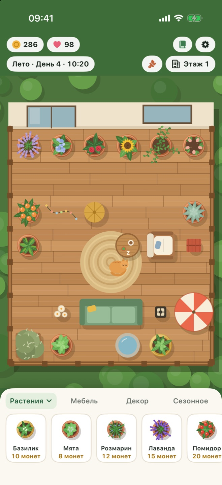
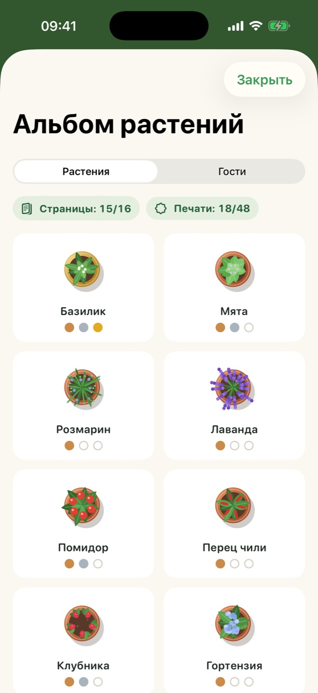
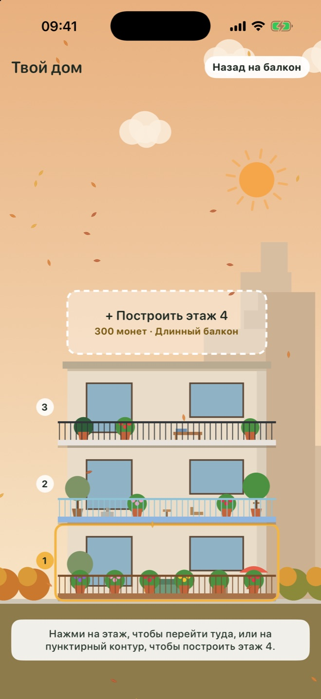

Растёт в реальном времени
Игровой день длится один реальный час. Короткие спокойные визиты вписываются в твой день, а к возвращению всегда что-то готово.
Для iPhone и iPad
Сажай травы, цветы и ягоды, украшай балкон, следи за временами года и встречай пернатых и пушистых гостей. Немного покоя каждый день.
Перетащи растение на балкон, поливай его, когда оно хочет пить, и собирай урожай, когда оно созреет.
Добавляй диваны, фонари, фонтаны и новые полы. Уютный балкон приносит больше и привлекает больше гостей.
Сад растёт, даже когда приложение закрыто. Забытое растение никогда не погибает — оно просто ждёт воды.
Всё для спокойного ежедневного ритуала и ничего, что подгоняет.
Игровой день длится один реальный час. Короткие спокойные визиты вписываются в твой день, а к возвращению всегда что-то готово.
Весенний дождь поливает растения, летнее солнце дозревает помидоры, осенью кружатся листья, а зимой снег ложится на перила.
Расставляй мебель и декор по сетке, а затем меняй пол на деревянный настил, мрамор или мозаику и ставь новые перила.
Заглядывают бабочки, пчёлы, сова, белка и соседские кошки. Узнай, что любит каждый, — и, может быть, одна кошка у тебя поселится.
Заполняй альбом растений этапами роста и печатями урожая, а заполнив его, открой особое лимонное дерево.
Копи монеты на новые этажи с балконами разной формы и смотри, как дом меняется вместе с временами года.



Одна бесплатная загрузка для обоих устройств. На iPad у балкона больше места, и видно больше окрестностей.
Балкон остаётся по центру на любом экране, а сад тянется до самого края вокруг строки состояния.
| iPhone | iOS 17 или новее |
|---|---|
| iPad | iPadOS 17 или новее |
| iPhone Duo | Поддерживается |
| Цена | Бесплатно. Без рекламы и встроенных покупок. |
|---|---|
| Аккаунт | Не нужен. Работает без интернета. |
| Прогресс | Сохраняется на твоём устройстве. |
У Balcony Bloom нет серверов, аналитики и рекламы. Ничего из того, что ты делаешь в игре, не попадает к разработчику. Прочитать политику конфиденциальности
Прочитай частые вопросы или создай issue, чтобы сообщить об ошибке или предложить идею.